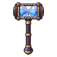
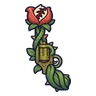
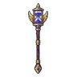
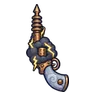

ผีพายุทราย
มอนธาตุลม Lv 72–80
เจอที่
| แมพ | โซน | Lv | ภูมิภาค |
|---|---|---|---|
| ใจกลางหุบผา | 72–80 | แดนใต้สีแดง | |
| ใจกลางหุบผา | หลุมราชาแมงป่อง | 78–80 | แดนใต้สีแดง |
| โอเอซิสแห้งขอด | 72–80 | แดนใต้สีแดง | |
| โอเอซิสแห้งขอด | บ่อน้ำแห้ง | 78–80 | แดนใต้สีแดง |
| ทุ่งหลุมแมลงช้าง | 72–80 | แดนใต้สีแดง | |
| ทุ่งหลุมแมลงช้าง | หลุมทรายยักษ์ | 78–80 | แดนใต้สีแดง |
| ป้อมโจรทะเลทรายร้าง | 72–80 | แดนใต้สีแดง | |
| ป้อมโจรทะเลทรายร้าง | ป้อมไม้บนหิน | 78–80 | แดนใต้สีแดง |
ค่าสถานะตามเลเวล
| Lv | HP | ATK | DEF | MDEF | EXP | Job |
|---|---|---|---|---|---|---|
| 72 | 21,291 | 152–227 | 17 | 13 | 82 | 62 |
| 76 | 24,766 | 162–244 | 18 | 14 | 87 | 65 |
| 80 | 28,817 | 173–259 | 19 | 14 | 91 | 68 |
ตีด้วยธาตุไหนดี
แรงขึ้น: ดิน ×1.5 พิษ ×1.25
เบาลง: น้ำ ×0.5 ลม ×0.25
วัตถุดิบที่ดรอป
| ของ | โอกาส | |
|---|---|---|
| ลูกแก้วพายุทราย | 55% | 1 ชิ้น (15% ได้ 2) |
อุปกรณ์ที่ดรอป (7)
| ของ | โอกาส |
|---|---|
| เกราะถ่านกองไฟ (เกราะอก) | 0.15% |
| เกราะถ่านกองไฟ (สนับขา + รองเท้าเกราะ) | 0.15% |
 ค้อนยักษ์นาฬิกาทราย | 0.12% |
 ปืนพกคู่ดอกไม้กินคน | 0.12% |
 คทานาฬิกาทราย | 0.12% |
 ปืนพกคู่เมฆฟ้าร้อง | 0.06% |
| เกราะถ่านกองไฟ (ถ่านเรืองในกรง) | 0.05% |
สกิล
กระโจน (Lv 25+) · กระโจน (Lv 60+)